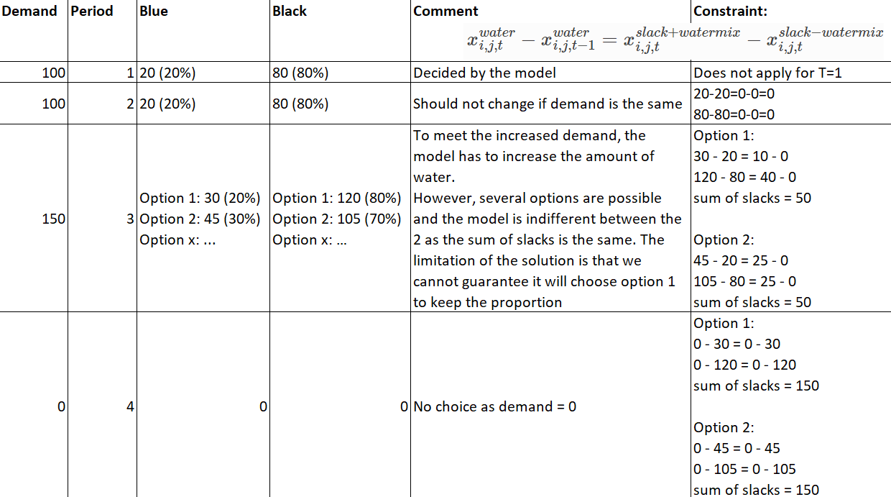
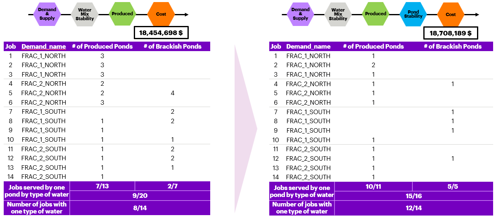

Water Management Model - Stability Features
Introduction
This pages describes the different modules that exists in the water management model. It includes the changes that were made to the actual version of the model/code, the context, the reasons, the limitations.
Stability brings uniformity in the decision the model takes across multiple days. It simplifies the adoption and implementation of the model’s results by removing part of the variability. Simple example of stability between two decisions across 10 days:
We can only take each decision (A or B) 5 times
Decision A and B are equivalent (cost, value, etc)

Water Mix Stability
Objective of the feature
This feature only applies to the PERMIAN asset.
Its objective is to keep a constant mix of the different types (PRODUCED and BRACKISH) of water during a job. A job is a series of time periods with a positive demand. When the demand becomes 0, the job stops. For example, if a job lasts 5 days and for the first period, the model decides to use 20% of PRODUCED and 80% of BRACKISH, it will be incentivized to keep those proportions throughout those 5 days. There is also an extra incentive to only use one type of water instead of 2 (reducing the costs), so 100% PRODUCED or 100% BRACKISH and then keep the 100% of one until the end of the job.
This will be applied to all the water mix stability mixers (one per demand, in orange in the picture below) right before supplying the demand in the water map.
Taking the example of this mixer for the demand “COMPLETIONS_FRAC_2_NORTH”, where blue line = produced water (recycled, clean) and black line = brackish water and where the number of barrels for the Blue and Black lines are 2 decision variables in the model. The first idea to implement the water mix stability was to make the PROPORTION (Blue/(Blue+Black) and Black/(Blue+Black) as close as possible throughout each job to ensure the water mix stability. However, this solution has 2 potential problems that are hard to solve:
It divides one decision variable by the sum of 2 decision variables, making it NON-LINEAR and could potentially explode the running time of the model
This division will generate an error when the demand is 0, as the model will put black and blue to 0 to respect the demand and thus, dividing by 0 is not possible.
In the end, the water mix stability feature targets the ABSOLUTE value on the arcs. So if the model decides to put 100.000 barrels of PRODUCED for period 1, it should use 100.000 barrels of PRODUCED for period 2 as well. By keeping the absolute values the same throughout each period, we ensure the same proportions as well. This works pretty well as long as the demand remains constant. However, if the demand changes, the model will be forced to reduce or increase the quantities and thus, the proportions might not remain the same as the previous period. This is the limitation of the model.
Here is an example from the model results on the Permian Asset, demonstrating the water mix stability as well as its limitations. You can clearly see that for a same job, the proportion of produced and brackish water remains the same. The only exception that occurs is when the demand changes (the height of the bar changes), then you see that the proportion might change as well.
What was added:
In the config file, a new column “WaterMixStability” has been added to the “Mixer_Nodes” tab, with value “Y” and “N”. All arcs going to a node with “Y” will be in scope of the water mix stability.
In the latest configuration_file, here are the mixers and their incoming arcs targeted for Water Mix Stability:
We introduced 2 slacks variable that are necessary to allow the model to not respect the fact that water in time t is equal to the one in time t-1, if it cannot do otherwise for diverse reasons (mainly demand changes). The goal of the model will be to minimize the sum of slack_positive and slack_negative, thus making them 0, so that x_t – x_t-1 = 0.
A new set: WMA \(\subset A\): Subset of arcs that represent arcs involved in water mix stability in the network superstructure, k \(\in\) {0,1,…,WMA}. They represent all the arcs coming into a mixer_node where its “WaterMixStability” characteristic is “Y”.
A new arc decision variable: \(x^{slack+watermix}_{i,j,t}\): Is the value of positive slack variable used for water mix stability for arc \({(i,j)}\) during time period \({t}\) \(\forall (i,j) \in WMA \subset A, \forall t \in T\)
A new arc decision variable: \(x^{slack-watermix}_{i,j,t}\): Is the value of negative slack variable used for water mix stability for arc \({(i,j)}\) during time period \({t}\) \(\forall (i,j) \in WMA \subset A, \forall t \in T\)
A new arc decision variable: \(x^{activearcwatermix}_{i,j,t}\): Is the value (1 or 0) of active arc used for water mix stability for arc \({(i,j)}\) during time period \({t}\) \(\forall (i,j) \in WMA \subset A, \forall t \in T\)
A new objective function: Minimize water mix stability slack variables:
\[\ Z = \sum_{t \in T} \sum_{(i,j) \in WMA \subset A} x_{i,j,t}^{slack+watermix} + x_{i,j,t}^{slack-watermix} + x_{i,j,t}^{activearcwatermix}\]A new constraint: 1.6.1. Water Mix Stability:
3 non-negativity additional constraints:
Disposal Stability
This feature only applies to the PERMIAN asset.
This will be applied to all the disposal stability mixers (one for each disposal demand).
The objective of this feature is to smoothen the disposal of produced water by the model. Without this feature, the model disposes in a “on/off” way the water that the recycling facility cannot handle. So it disposes a lot on a day, then nothing the other, then again a lot 3 days later etc. In reality, the water is disposed continuously in very similar amounts. This is achieved with this feature, simply using what has been built for Water Mix Stability. The only difference here is that the goal is to get the same amount of water disposed period after period. There is no concept of job or proportions here.
Here is an example of what the disposal stability achieves. You can clearly see that as of period 80, the model disposes 40,000 barrels of water every day, instead of disposing water from time to time, in much bigger batches, sometimes up to 80,000 barrels.
What was added:
In the config file, a new column “WaterMixStability_LowPriority” has been added to the “Mixer_Nodes” tab, with value “Y” and “N”. All arcs going to a node with “Y” will be in scope of the disposal stability.
In the latest configuration_file, here are the mixers and their incoming arcs targeted for Disposal Stability:
A new set: WMALP \(\subset A\): Subset of arcs that represent arcs involved in water mix stability in the network superstructure, k \(\in\) {0,1,…,WMALP}. They represent all the arcs coming into a mixer_node where its “WaterMixStability” characteristic is “Y”.
A new objective function: Minimize water mix stability low priority (disposal stability) slack variables:
\[\ Z = \sum_{t \in T} \sum_{(i,j) \in WMALP \subset A} x_{i,j,t}^{slack+watermix} + x_{i,j,t}^{slack-watermix} + x_{i,j,t}^{activearcwatermix}\]
All decision variables and constraints have been built in the exact same way as water mix stability, but on the subset **WMALP* of arcs.
Pond Stability
Objective of the feature
This feature only applies to the PERMIAN asset.
This will be applied to all the pond stability mixers (one per type of water, in purple in the picture below) right before the water mix stability mixers in the water map.
Its objective of the pond stability feature is to use the same source pond for the total period of a job. Similarly to the water mix stability. So if at the beginning of the job, the model decides to use POND 1 as the source of water, it should use this one, in priority, until the end. It is possible that the model decides to use 2 different ponds to supply the water in order to fulfill the demand but it also has an incentive to use only 1. The pond stability is applied PER TYPE of water, meaning, if the model needs to use PRODUCED and BRACKISH for a job, it will be incentivized to use only 1 pond for PRODUCED and 1 pond for BRACKISH. The fact that the model should use ONE TYPE of water to fulfill a job is accomplished by the Water Mix Stability.
Here is an example of model results demonstrating the difference when Pond Stability is applied or not. You see that the number of different ponds used for each type of water (Produced and Brackish) has significantly decreased for each job. Obviously, each improvement comes with a cost, so the pond stability makes the cost go a bit higher. This is due to the fact that to be able to supply water for one pond, water from the other ponds need to be transfered to the pond used, at a certain cost.
What was added:
In the config file, a new column “PondStability” has been added to the “Mixer_Nodes” tab, with value “Y” and “N”. All arcs going to a node with “Y” will be in scope of the pond stability.
In the latest configuration_file, here are the mixers and their incoming arcs targeted for Water Mix Stability:
A new set: PSA \(\subset A\): Subset of arcs that represent arcs involved in pond stability in the network superstructure, k \(\in\) {0,1,…,PSA}. They represent all the arcs coming into a mixer_node where its “PondStability” characteristic is “Y”.
A new arc decision variable: \(x^{slack+pond}_{i,j,t}\): Is the value of positive slack variable used for pond stability for arc \({(i,j)}\) during time period \({t}\) \(\forall (i,j) \in PSA \subset A, \forall t \in T\)
A new arc decision variable: \(x^{slack-pond}_{i,j,t}\): Is the value of negative slack variable used for pond stability for arc \({(i,j)}\) during time period \({t}\) \(\forall (i,j) \in PSA \subset A, \forall t \in T\)
A new arc decision variable: \(x^{activearcpond}_{i,j,t}\): Is the value (1 or 0) of active arc used for pond stability for arc \({(i,j)}\) during time period \({t}\) \(\forall (i,j) \in PSA \subset A, \forall t \in T\)
A new objective function: Minimize pond stability slack variables:
\[\ Z = \sum_{t \in T} \sum_{(i,j) \in PSA \subset A} x_{i,j,t}^{slack+pond} + x_{i,j,t}^{slack-pond} + x_{i,j,t}^{activearcpond}\]A new constraint: 1.7.1. Pond Stability:
3 non-negativity additional constraints:
Treatment
Introduction
The following model is an adapted network flow problem. The main goal of this model is to send flow from the source nodes (initial nodes) S to the terminal nodes (ending nodes) Z. This adapted model contemplates several types of nodes where each one of them represents a different part in the watermap with unique features, costs and configurations.
Each arc and node in the system can have specific flows and storing capacities. Also, they can have an operational cost, flow transportation cost and a electrical cost. The last one can be calculated by linear regression or with a fixed expression.
The fluid that is flowing through the system is composed by contaminated water (contaminants will be considered as a given ppm in the water) and oil depending on the asset that is going to be implemented. When there’s a presence of contaminants, the mathematical model becomes a quadratic programming problem. The goal of the model is to optimize the water management and not oil decisions. Therefore, we assume that all the fixed features needed in the system won’t be optimized and will be given by the user.
Sets
Time Dimension Set
T: Set of time periods, t \(\in\) {0,1,…,T}
Node’s sets & subsets
N: Set of nodes in the network superstructure, i \(\in\) {0,1,…,N}
S \(\subset N\): Subset of nodes that represent the beginning of the network superstructure (sources), s \(\in\) {0,1,…,S}
Z \(\subset N\): Subset of nodes that represent the end of the network superstructure (sinks), z \(\in\) {0,1,…,Z}
MAX_S \(\subset S\): Subset of initial nodes that represent preferred sources in the network superstructure, max_S \(\in\) {0,1,…,MAX_S}
MAX_Z \(\subset Z\): Subset of ending nodes that represent preferred terminals in the network superstructure, max_Z \(\in\) {0,1,…,MAX_Z}
R \(\subset Z\): Subset of ending that represent reuse terminals in the network superstructure, r \(\in\) {0,1,…,R}
P \(\subset N\): Subset of nodes that represent pumps in the network superstructure, p \(\in\) {0,1,…,P}
PFE \(\subset P\): Subset of pump nodes that represent fixed efficiency pumps in the network superstructure, pfe \(\in\) {0,1,…,PFE}
PLR \(\subset P\): Subset of pump nodes that represent linear regression pumps in the network superstructure, plr \(\in\) {0,1,…,PLR}
PU \(\subset N\): Subset of nodes that represent process units in the network superstructure, pu \(\in\) {0,1,…,PU}
TU \(\subset N\): Subset of nodes that represent treatment units in the network superstructure, tu \(\in\) {0,1,…,TU}
OTU \(\subset N\): Subset of nodes that represent oil treatment units in the network superstructure, otu \(\in\) {0,1,…,OTU}
MU \(\subset N\): Subset of nodes that represent mixer units in the network superstructure, mu \(\in\) {0,1,…,MU}
SU \(\subset N\): Subset of nodes that represent splitter units in the network superstructure, su \(\in\) {0,1,…,SU}
SWLT \(\subset SU\): Subset of nodes that represent splitter units with loss tanks in the network superstructure, swlt \(\in\) {0,1,…,SWLT}
SWOLT \(\subset SU\): Subset of nodes that represent splitter units without loss tanks in the network superstructure, swolt \(\in\) {0,1,…,SWOLT}
STU \(\subset N\): Subset of nodes that represent storage tank units in the network superstructure, stu \(\in\) {0,1,…,STU}
LTU \(\subset N\): Subset of nodes that represent loss tank units in the network superstructure, ltu \(\in\) {0,1,…,LTU}
POU \(\subset N\): Subset of nodes that represent pond units in the network superstructure, pou \(\in\) {0,1,…,POU}
CTU \(\subset N\): Subset of nodes that represent cooling tower units in the network superstructure, ctu \(\in\) {0,1,…,CTU}
BU \(\subset N\): Subset of nodes that represent boiler units in the network superstructure, bu \(\in\) {0,1,…,BU}
O \(\subset N\): Subset of nodes that represent oil nodes in the network superstructure, o \(\in\) {0,1,…,O}
Contaminant’s set
C: Set of contaminant species in the network superstructure, c \(\in\) {0,1,…,C}
Arc’s sets & subsets
A: Set of arcs in the network superstructure, k \(\in\) {0,1,…,A}
FSA \(\subset A\): Subset of arcs that represent fixed splitter arcs in the network superstructure, k \(\in\) {0,1,…,FSA}
FOTA \(\subset A\): Subset of arcs that represent fixed oil treatment arcs in the network superstructure, k \(\in\) {0,1,…,FOTA}
OA \(\subset A\): Subset of arcs that represent oil arcs in the network superstructure, k \(\in\) {0,1,…,OA}
FA \(\subset A\): Subset of arcs that represent flag arcs in the network superstructure, k \(\in\) {0,1,…,FA}
WMA \(\subset A\): Subset of arcs that represent arcs involved in water mix stability in the network superstructure, k \(\in\) {0,1,…,WMA}
Identified via the “Y” in the “WaterMixStability” column in the “Node_Mixer” tab of the configuration file
WMALP \(\subset A\): Subset of arcs that represent arcs involved in water mix stability low priority (disposal stability in permian) in the network superstructure, k \(\in\) {0,1,…,WMALP}
Identified via the “Y” in the “WaterMixStability_LowPriority” column in the “Node_Mixer” tab of the configuration file
NA \(\subset A\): Subset of arcs that represent nominal arcs in the network superstructure, k \(\in\) {0,1,…,NA}
Identified via the numbers in the “Nominal_Value” column in the “Arcs_CPF” tab of the configuration file.
PSA \(\subset A\): Subset of arcs that represent arcs involved in pond stability in the network superstructure, k \(\in\) {0,1,…,PSA}
Identified via the “Y” in the “PondStability” column in the “Node_Mixer” tab of the configuration file
Parameters
Arc’s parameters
\(l^{a}_{i,j}\): Is the minimum flow required for the arc \({(i,j)}\), \(\forall (i,j) \in A\)
\(u^{a}_{i,j}\): Is the maximum flow allowed for the arc \({(i,j)}\), \(\forall (i,j) \in A\)
\(up^{a}_{i,j,t}\): Is the usable percentage for the arc \({(i,j)}\) during the time period \({t}\), \(\forall t \in T, \forall (i,j) \in A\)
\(\alpha^{nominal}_{i,j,t}\): Is the nominal value for the arc \({(i,j)}\) during the time period \({t}\), \(\forall t \in T, \forall (i,j) \in A\)
\(c^{flow}_{i,j}\): Is the flow transportation cost that comes from the node \({i}\) to the node \({j}\), \(\forall (i,j) \in A\)
\(c^{other}_{i,j,t}\): Are the other costs that come from the node \({i}\) to the node \({j}\) during the time period \({t}\), \(\forall t \in T,\forall (i,j) \in A\)
\(fwp^{a}_{i,j}\): Is the fixed water percentage for the arc \({(i,j)}\), \(\forall (i,j) \in FOTA \subset A\)
\(fop^{a}_{i,j}\): Is the fixed oil percentage for the arc \({(i,j)}\), \(\forall (i,j) \in FOTA \subset A\)
\(fp^{split}_{i,j}\): Is the fixed split percentage for the arc \({(i,j)}\), \(\forall (i,j) \in FSA \subset A\)
Node’s parameters
\({entry}_j\): Set of all nodes \(i\) that are input nodes \({(i,j)}\) towards the node \(j\), \((i: [0,..,j])\) \(\forall i,j \in N\)
\({exit}_j\): Set of all nodes \(k\) that are output nodes \({(j,k)}\) from the node \(j\), \((j: [0,..,k])\) \(\forall j,k \in N\)
\(l^{n}_{i}\): Is the lower storing capacity for the node \({i}\), \(\forall i \in N\)
\(u^{n}_{i}\): Is the upper storing capacity for the node \({i}\), \(\forall i \in N\)
\(\gamma^{water}_{i,t}\): Is the initial amount of water in the network for source node \({i}\) at the beginning of time period \({t}\), \(\forall t \in T, \forall i \in S \subset N\)
\(\gamma^{oil}_{i,t}\): Is the initial amount of oil in the network for source node \({i}\) at the beginning of time period \({t}\), \(\forall t \in T, \forall i \in S \subset N\)
\(\gamma^{c}_{i,t}\): Is the initial amount of contaminant \({c}\) in the network for source node \({i}\) at the beginning of time period \({t}\), \(\forall t \in T, \forall c \in C, \forall i \in S \subset N\)
\(\nabla^{c}_{i}\): Is the initial amount of contaminant \({c}\) content in the node \({i}\), \(\forall i \in STU \land POU \subset N, \forall c \in C\)
\(\kappa^{water}_{i,t}\): Is the dynamic ending capacity of water for node \({i}\) at the beginning of time period \({t}\), \(\forall t \in T, \forall i \in Z \subset N\)
\(\kappa^{oil}_{i,t}\): Is the dynamic ending capacity of oil for node \({i}\) at the beginning of time period \({t}\), \(\forall t \in T, \forall i \in Z \subset N\)
\(\tau^{in}_{i}\): Is the inflow pressure for pump \({i}\), \(\forall i \in P \subset N\)
\(\tau^{out}_{i}\): Is the outflow pressure for pump \({i}\), \(\forall i \in P \subset N\)
\(\eta^{n}_{i}\): Is the efficiency of pump \({i}\), \(\forall i \in P \subset N\)
\(\phi^{i}_{0}\): Is the linear regression intercept coefficient for pump \({i}\), \(\forall i \in PLR \subset P \subset N\)
\(\phi^{i}_{1}\): Is the linear regression pressure coefficient for pump \({i}\), \(\forall i \in PLR \subset P \subset N\)
\(\phi^{i}_{2}\): Is the linear regression flow rate coefficient for pump \({i}\), \(\forall i \in PLR \subset P \subset N\)
\(\lambda^{c}_{i}\): Is the fixed discharge load of contaminant \({c}\) added in the process unit \({i}\), \(\forall c \in C, \forall i \in PU \subset N\)
\(\omega^{c}_{i}\): Is the removal efficiency of contaminant \({c}\) from the treatment unit \({i}\), \(\forall c \in C, \forall i \in TU \subset N\)
\(\delta^{water}_{i}\): Is the initial amount of water content in the node \({i}\), \(\forall i \in STU \cup POU \subset N\)
\(\xi^{water}_{i}\): Is the evaporation rate in the node \({i}\), \(\forall i \in POU \subset N\)
General parameters
\(M\): Is a very big penalty constant that is equal to the maximum capacity of the nodes.
\(M^{arcs}\): Is a very big penalty constant that is equal to the maximum capacity of the arcs.
\(E\): Is the electrical cost per unit of the system.
\(watt_{to}^{kwh}\): Is the unit convertion constant to transform watts to kwh.
\(bpd_{psi}^{kwh}\): Is the unit convertion constant to transform bpd to psi to kwh.
\(bar_{to}^{lts}\): Is the unit convertion constant to transform barrels to litters.
\(Tm\): Is the last time period.
\(\epsilon\): Is a small penalty constant.
\(\psi\): Is a positive energy constant.
\(per_{opt}^{hier}\): Is the percentage of hierarchical optimization.
Decision variables
Node’s decisions
\(y^{water}_{i,t}\): Is the amount of water to be stored in the node \({i}\) at the beginning of time period \({t}\), \(\forall i \in N, \forall t \in T\)
\(y^{oil}_{i,t}\): Is the amount of oil to be stored in the node \({i}\) at the beginning of time period \({t}\), \(\forall i \in O \subset N, \forall t \in T\)
\(y^{elec}_{i,t}\): Is the electricity generation in the node \({i}\) at the beginning of time period \({t}\), \(\forall i \in P \subset N, \forall t \in T\)
\(y^{c}_{i,t}\): Is the concentration of contaminant \({c}\) in the node \({i}\) at the beginning of time period \({t}\), \(\forall i \in N, \forall t \in T, \forall c \in C\)
Arc’s decisions
\(x^{water}_{i,j,t}\): Is the amount of water to be send from the node \({i}\) to the node \({j}\) during time period \({t}\), \(\forall (i,j) \in A, \forall t \in T\)
\(x^{oil}_{i,j,t}\): Is the amount of oil to be send from the node \({i}\) to the node \({j}\) during time period \({t}\), \(\forall (i,j) \in OA \subset A, \forall t \in T\)
\(x^{c}_{i,j,t}\): Is the concentration of contaminant \({c}\) in the arc \({(i,j)}\) during time period \({t}\), \(\forall c \in C, \forall (i,j) \in A, \forall t \in T\)
\(x^{slack+watermix}_{i,j,t}\): Is the value of positive slack variable used for water mix and pond stability for arc \({(i,j)}\) during time period \({t}\) \(\forall (i,j) \in WMA \cup WMALP, \forall t \in T\)
\(x^{slack-watermix}_{i,j,t}\): Is the value of negative slack variable used for water mix stability for arc \({(i,j)}\) during time period \({t}\) \(\forall (i,j) \in WMA \cup WMALP, \forall t \in T\)
\(x^{slack+pond}_{i,j,t}\): Is the value of positive slack variable used for pond stability for arc \({(i,j)}\) during time period \({t}\) \(\forall (i,j) \in PSA, \forall t \in T\)
\(x^{slack-pond}_{i,j,t}\): Is the value of negative slack variable used for pond stability for arc \({(i,j)}\) during time period \({t}\) \(\forall (i,j) \in PSA, \forall t \in T\)
\(x^{delta}_{i,j,t}\): Is the difference between the nominal value and the water flow for the arc \({(i,j)}\) during time period \({t}\), \(\forall (i,j) \in A, \forall t \in T\)
Objective functions
Penalty:
\[\ SP = \sum_{t \in T} \sum_{i \in S \subset N} M * y_{i,t}^{water} \]Minimize other costs objective:
\[\ Z = \sum_{t \in T} \sum_{(i,j) \in A, j - {Z}} (c_{i,j,t}^{other} + c_{i,j}^{flow}) * x_{i,j,t}^{water} \]Minimize nominal difference objective:
\[\ Z = \sum_{t \in T} \sum_{(i,j) \in NA \subset A} x^{delta}_{i,j,t} \]Maximize recirculation (Baranca) / produced water (Permian) objective:
\[\ Z = \sum_{t \in T} \sum_{(i,j) \in FA \subset A} x_{i,j,t}^{water} \]For the PERMIAN asset, this is achieved by targeting arcs with a “Y” in the “Recirculation” column in the “Arcs_CPF” tab of the configuration file.
Minimize total costs objective:
i) Electrical cost:
\[\ Z_1 = \sum_{t \in T}\sum_{i \in P \subset N} E*y_{i,t}^{elec} \]ii) Flow cost water:
\[\ Z_2 = \sum_{t \in T} \sum_{(i,j) \in A, j - {Z}} c_{i,j}^{flow} * x_{i,j,t}^{water}\]iii) Flow cost oil:
\[\ Z_3 = \sum_{t \in T} \sum_{(i,j) \in OA, j - {Z}} c_{i,j}^{flow} * x_{i,j,t}^{oil}\]iv) Other cost water:
\[\ Z_4 = \sum_{t \in T} \sum_{(i,j) \in A, j - {Z}} c_{i,j,t}^{other} * x_{i,j,t}^{water}\]v) Other cost oil:
\[\ Z_5 = \sum_{t \in T} \sum_{(i,j) \in A, j - {Z}} c_{i,j,t}^{other} * x_{i,j,t}^{oil}\]vi) Total costs:
\[\ Z = Z_1 + Z_2 + Z_3 + Z_4 + Z_5 \]Maximize supply and demand balance objective:
\[\ Z = \sum_{t \in T} (\sum_{i \in MAX_Z \subset Z } y_{i,t}^{water} - \sum_{i \in MAX_S \subset S } y_{i,t}^{water})\]End benefit:
\[\ Z = \sum_{t \in T} \sum_{(i,j) \in A, j \in {Z}} x_{i,j,t}^{water} \]Minimize water mix stability slack and binary variables:
\[\ Z = \sum_{t \in T} \sum_{(i,j) \in WMA \subset A} x_{i,j,t}^{slack+watermix} + x_{i,j,t}^{slack-watermix} + x_{i,j,t}^{activearcwatermix} \]Minimize water mix stability low priority (= disposal stability) slack and binary variables:
\[\ Z = \sum_{t \in T} \sum_{(i,j) \in WMALP \subset A} x_{i,j,t}^{slack+watermix} + x_{i,j,t}^{slack-watermix} + x_{i,j,t}^{activearcwatermix} \]Minimize pond mix stability slack and binary variables:
\[\ Z = \sum_{t \in T} \sum_{(i,j) \in PSA \subset A} x_{i,j,t}^{slack+pond} + x_{i,j,t}^{slack-pond} + x_{i,j,t}^{activearcpond} \]
Hierarchical optimization
downstream_minimize_costs:
\[Min(Network \space cost)\]
downstream_maximize_recirculation:
\[Max(Recirculation)\]\[Water \space flow \space cost<=Min(per_{opt}^{hier}*Water \space flow \space cost)\]
upstream_minimize_electrical_consumption:
\[Max(End \space benefit)\]\[Energy \space cost<=Min(per_{opt}^{hier}*Energy \space cost)\]\[Network \space cost<=Min(per_{opt}^{hier}*Network \space cost)\]
upstream_maximize_reuse:
\[Max(End \space benefit)\]\[Network \space cost<=Min(per_{opt}^{hier}*Network \space cost)\]
upstream_minimize_costs:
\[Max(End \space benefit)\]\[Network \space cost <= Min(per_{opt}^{hier}*Network \space cost)\]
upstream_supply_demand_cost:
\[Max(Supply \space demand \space flow)\]\[Max(Produced \space Water)\]\[Network \space cost<=Min(per_{opt}^{hier}*Network \space cost)\]
upstream_supply_demand_cost_water_mix_stabilized:
\[Max(Supply \space demand \space flow)\]\[Max(Produced \space Water)\]\[Min(Water \space Mix \space Stability \space Slack \space and \space Binary \space Variables)\]\[Network \space cost<=Min(per_{opt}^{hier}*Network \space cost)\]
upstream_supply_demand_cost_water_mix_stabilized_inverted:
\[Max(Supply \space demand \space flow)\]\[Min(Water \space Mix \space Stability \space Slack \space and \space Binary \space Variables)\]\[Max(Produced \space Water)\]\[Network \space cost<=Min(per_{opt}^{hier}*Network \space cost)\]
upstream_supply_demand_cost_fully_stabilized:
\[Max(Supply \space demand \space flow)\]\[Max(Produced \space Water)\]\[Min(Water \space Mix \space Stability \space Slack \space and \space Binary \space Variables)\]\[Min(Pond \space Stability \space Slack \space and \space Binary \space Variables)\]\[Network \space cost<=Min(per_{opt}^{hier}*Network \space cost)\]\[Min(Water \space Mix \space Stability \space Low \space Priority \space Slack \space and \space Binary \space Variables)\]
upstream_supply_demand_cost_fully_stabilized_inverted:
\[Max(Supply \space demand \space flow)\]\[Min(Water \space Mix \space Stability \space Slack \space and \space Binary \space Variables)\]\[Max(Produced \space Water)\]\[Min(Pond \space Stability \space Slack \space and \space Binary \space Variables)\]\[Network \space cost<=Min(per_{opt}^{hier}*Network \space cost)\]\[Min(Water \space Mix \space Stability \space Low \space Priority \space Slack \space and \space Binary \space Variables)\]
Constraints
0. Electrical cost constraints
0.1. For linear regression:
0.2. For efficiency:
1. Flow balancing constraints
1.1.1. Water flow balancing (except for initial nodes):
1.1.2. Water flow balancing (except for initial nodes):
1.1.3. Water flow balancing (except for initial nodes, tanks and ponds):
1.2.1. Total time water flow balance:
1.3.1. Oil flow balancing (except for initial nodes):
1.3.2. Oil flow balancing (except for initial nodes):
1.4. Storage water/oil proportions constraints
1.4.1. Initial nodes:
1.4.2. Rest nodes:
1.5.1. Total time oil flow balance:
2. Capacity constraints
2.1. Water arcs capacity:
2.2. Water nodes capacity:
2.3. Oil arcs capacity:
2.4. Oil nodes capacity:
3. Stability constraints
3.1. Water Mix Stability:
3.2. Pond Stability:
4. Initial nodes constraints
4.3. Water flow balancing for initial nodes:
4.4. Water flow balancing for initial nodes:
4.5. Water flow balancing for initial nodes:
4.6. Water flow balancing for initial nodes:
4.7.1. Non empty water balancing for initial nodes:
4.7.2. Non empty water balancing for initial nodes:
4.8.1. Non empty oil balancing for initial nodes:
4.8.2. Non empty oil balancing for initial nodes:
5. Splitter nodes
5.1. Splitter nodes without loss tank (contaminant balance):
5.1.2. Splitter nodes with loss tank (contaminant balance):
5.2. Water fixed splitter constraint
5.3. Oil fixed splitter constraint
6. Mixer nodes
6.1. Mixer nodes (contaminant balance):
6.2. Boiler nodes (contaminant balance):
6.3. Cooling tower nodes (contaminant balance):
7. Process nodes
7.1. Process nodes (contaminant balance):
7.2. Initial nodes (contaminant balance):
8. Treatment nodes
8.1. Treatment nodes (contaminant balance):
9. Oil Treatment nodes
9.1. Water fixed treatment constraint
9.2. Oil fixed treatment constraint
10. Tank nodes
10.1.1. Tank nodes (Initial contaminant balance):
10.1.2. Tank nodes (contaminant balance):
10.2.1. Tank nodes (contaminant balance assumption):
10.2.2. Tank nodes (contaminant balance assumption):
10.3. Other nodes (contaminant balance):
11. Ending nodes balance constraints
11.1.1. Non empty water balancing for ending nodes:
11.1.2. Non empty water balancing for ending nodes:
11.1.3. Non empty oil balancing for initial nodes:
11.1.4. Non empty oil balancing for initial nodes:
11.2.1. Ending nodes water balance below demand:
11.2.2. Ending nodes oil balance below demand:
12. Loss tank nodes
12.1.1. Before loss tanks (contaminant balance):
12.1.2. Loss tank nodes (contaminant balance):
13. Positive energy constraints
13.1. Pump nodes, Positive energy: to force binary to be 1 if continuous is positive
13.2. Pump nodes, Positive energy: to force binary to be 0 if continuous is 0
13.3. Positive energy
14. Pond nodes
14.1.1. Pond nodes (Initial contaminant balance):
14.1.2. Pond nodes (Initial contaminant balance):
14.2.1. Pond nodes (contaminant balance assumption):
14.3.1. Evaporation loss over content constraint
15. Stability - Linking binary and continuous decision variables
15.1. Arcs, Water Mix Stability: to force binary to be 0 if continuous is 0
15.2. Arcs, Water Mix Stability: to force binary to be 1 if continuous is positive
15.3. Arcs, Pond Stability: to force binary to be 0 if continuous is 0
15.4. Arcs, Pond Stability: to force binary to be 1 if continuous is positive
16. Nominal values
16.1. Positive difference (nominal values):
16.2. Negative difference (nominal values):